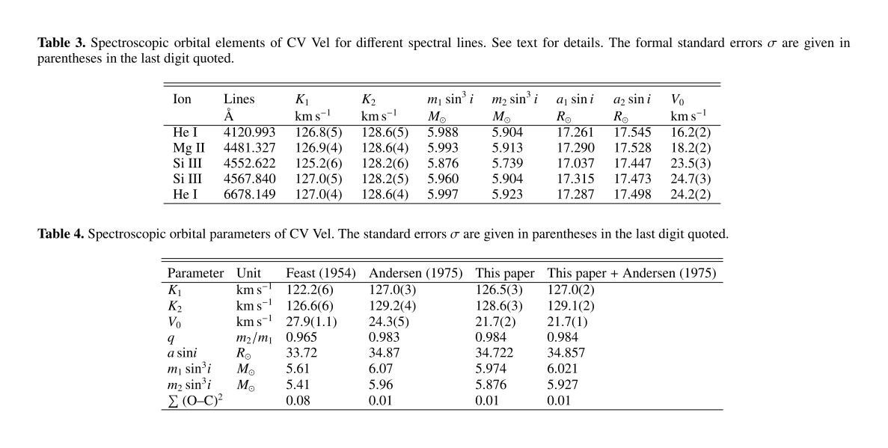
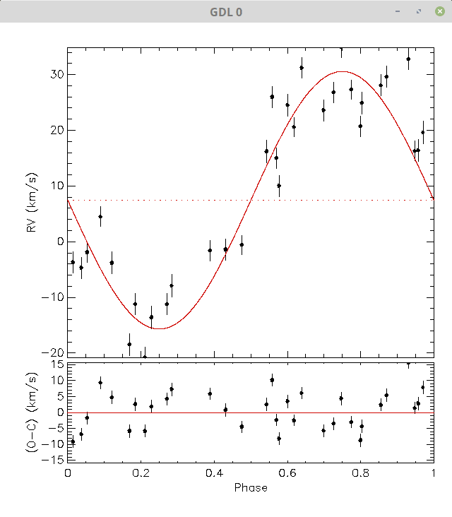

I sistemi binari sono fondamentali per permettere la determinazione della massa delle stelle.
A parte quei pochi sistemi in cui si può usare il lensing gravitazionale, sono gli unici casi in cui sia possibile determinare la massa di una stella.
Osservazione di sistemi binari
Per binarie ad eclisse, i \approx 90^\circ.
Osservazione di sistemi binari
Osservazione di sistemi binari
Nel sistema del c.d.m. vale che
\begin{cases}
M_1 v_1 &= M_2 v_2, \\
\frac{2\pi r_1}{v_1} &= \frac{2\pi r_2}{v_2} = P,
\end{cases} \Rightarrow \frac{r_1}{r_2} = \frac{v_1}{v_2} = \frac{M_2}{M_1}.
Dalle leggi di Newton ricaviamo che
\begin{cases}
G \frac{M_1 M_2}{R^2} = M_1 \frac{v_1^2}{r_1}, \\
G \frac{M_1 M_2}{R^2} = M_2 \frac{v_2^2}{r_2},
\end{cases} \Rightarrow M_1 + M_2 = \frac{P \bigl(v_1 + v_2\bigr)^3}{2\pi G}.
Osservazione di sistemi binari
Le equazioni
\begin{aligned}
\frac{r_1}{r_2} &= \frac{v_1}{v_2} = \frac{M_2}{M_1}, \\
M_1 + M_2 &= \frac{P}{2\pi G} \bigl(v_1 + v_2\bigr)^3
\end{aligned}
descrivono la dinamica di un sistema binario con orbite circolari.
Osservazione di sistemi binari
Dalla Terra possiamo misurare facilmente queste quantità:
v_{r1} \equiv v_1 \sin i, v_{r2} \equiv v_2 \sin i;
Il periodo dell’orbita P.
Determinare r_1 ed r_2 è estremamente difficile.
In termini di v_{r1} e v_{r2}, la seconda equazione diventa
L’equazione analitica è utile solo per mettere in relazione diverse quantità fisiche. Per ridurre misurazioni da telescopio si usano invece metodi numerici, più robusti e in grado anche di tenere conto di altri effetti:
Ellitticità delle orbite;
Deformazione della stella causata dalla rotazione (importante nelle eclissi);
Limb darkening (minore luminosità al bordo);
Gravity darkening (minore temperatura all’Equatore a causa del rigonfiamento rotazionale);
Mutua interazione gravitazionale tra le due stelle (forze mareali);
Etc.
Metodi numerici
Il sistema CV Velorum
Il sistema binario CV Velorum
È un sistema binario spettroscopico per il quale sono visibili anche eclissi. (Costellazione della Vela, nel cielo australe).
È un sistema molto interessante, studiato in più lavori. Quelli a cui facciamo riferimento noi sono:
Andersen (A&A 44, 1975, pagg. 355-362);
Clausen & Grnbeck (A&A 58, 1977, pagg. 131–137);
Yakut et al. (A&A 467, 2007, pagg. 647–655).
Periodo dell’orbita
Il periodo è stato determinato da Andersen (1975) e Clausen & Grnbeck (1977). Noi facciamo riferimento a quest’ultimo.
Filtri e stelle calibratrici
Tabella delle magnitudini
Cosa si può dedurre sul sistema binario CV Velorum dal grafico precedente a proposito delle due stelle che lo compongono e della loro orientazione nello spazio?
Caratteristiche di CV Vel
Le due stelle hanno luminosità e raggio simile…
…quindi probabilmente il centro delle orbite coincide col centro di massa…
…quindi le due stelle hanno velocità orbitali uguali in modulo.
Clausen & Grønbeck stimano il periodo col numero
P = 6.889\ 494\,\text{d}.
Spettroscopia di CV Velorum
Nel 2007 Yakut et al. hanno pubblicato un lavoro in cui si fa un’analisi spettroscopica di CV Velorum.
Determiniamo la velocità radiale massima v_r dalla riga di SiIII e di HeI, assumendo che i grafici mostrino i due estremi delle oscillazioni Doppler delle righe.
Effetto Doppler
Quando la velocità radiale è massima (\pm v_r), le lunghezze d’onda sono:
\begin{aligned}
\lambda_1 &=& \frac{c + v_0 + v_r}c \lambda_0, \\
\lambda_2 &=& \frac{c + v_0 - v_r}c \lambda_0,
\end{aligned}
Da ciò segue che
v_0 = \left(\frac{\left<\lambda_{1/2}\right>}{\lambda_0} - 1\right) c, \quad v_r = c \frac{\Delta \lambda}{2 \lambda_0}.
Velocità radiale (SiIII)
\begin{aligned}
v_0 &=& \left(\frac{4553.0\,\mathring{\mathrm{A}}}{4552.6\,\mathring{\mathrm{A}}}\right) c \approx 26.3\,\text{km\,s$^{-1}$},\\
v_r &=& c \frac{4555.0\,\mathring{\mathrm{A}} - 4551.0\,\mathring{\mathrm{A}}}{2 \times 4552.6\,\mathring{\mathrm{A}}} \approx
132\,\text{km\,s$^{-1}$}.
\end{aligned}
Velocità radiale (HeI)
\begin{aligned}
v_0 &=& \left(\frac{6678.75\,\mathring{\mathrm{A}}}{6678.1\,\mathring{\mathrm{A}}}\right) c \approx 29.2\,\text{km\,s$^{-1}$},\\
v_r &=& c \frac{6681.5\,\mathring{\mathrm{A}} - 6676.0\,\mathring{\mathrm{A}}}{2 \times 6678.1\,\mathring{\mathrm{A}}} \approx
123\,\text{km\,s$^{-1}$}.
\end{aligned}
Velocità radiale
Il valor medio delle nostre stime di v_r è
\left<v_r\right> = 128\,\text{km\,s$^{-1}$}.
Yakut et al. citano v_1 = 126\,\text{km\,s$^{-1}$} e v_2 = 128\,\text{km\,s$^{-1}$}.
Velocità stimate da Yakut et al.
(Perché i dati formano dei cluster?)
Determinazione delle masse
Se v_1 = v_2 = v_r e i = 90^\circ, allora
M_1 + M_2 = \frac{P}{2\pi G} \bigl(2 v_r \bigr)^3
La massa totale è
M_1 + M_2 = \frac{6.89\,\text{d}\,(2 \cdot
128\,\text{km/s})^3}{2\pi\cdot6.67\times10^{-11}\text{N m$^2$/kg$^2$}} = 11.2\,M_\odot.
Se le due stelle sono simili, assumiamo che M_1 \approx M_2 \approx 5.6\,M_\odot.
Parametri orbitali (Yakut et al.)

(Notare le discrepanze in V_0, non ancora spiegate).
Quale stella ruota più velocemente?
Classe spettrale
Sono stelle di tipo B (T \approx 18\,000\,\text{K}).
Il programma rvfit sembra fare esattamente al caso nostro:
Accetta in input le velocità radiali;
Produce come output i parametri orbitali del sistema;
Non richiede di specificare le velocità radiali di entrambe le stelle.
Il modello di rvfit
Il codice sorgente di rvfit
Il programma è scritto usando IDL, che è un linguaggio di analisi dati un tempo molto usato in astronomia.
IDL è un programma a pagamento; sui computer del centro di calcolo era disponibile fino all’anno scorso, ma noi useremo un clone open-source, GNU Data Language.
rvfile2 serve se si hanno misure della seconda stella, ma non è il nostro caso, quindi lo lasciamo vuoto. I quattro vettori di numeri specificano i parametri da fittare.
Il primo vettore fitparam dice se un parametro deve essere calcolato oppure supposto noto. (Se la binaria è a eclisse, è meglio supporre noto il periodo, perché è facile calcolarlo con precisione). Nel caso in cui sia noto, va specificato in valparam.
Con l’opzione /physics, rvfit ha generato anche due grafici con l’andamento delle velocità in funzione della fase:
HDE308813-1.conf
HDE308813-2.conf

Video dell’analisi
Chi fosse interessato a riprodurre questi calcoli (auguri!) può guardare il video, che contiene una registrazione dell’analisi fatta con GDL e Julia dei dati mostrati oggi.
Articoli astronomici
L’ampia diffusione di software astronomici/astrofisici/cosmologici ha reso necessario un processo di controllo che verifichi non solo la qualità dei risultati scientifici, ma anche la qualità del codice e la sua documentazione.
Una rivista (non solo astronomica), Journal of Open Source Software, è nata esattamente con questo scopo.